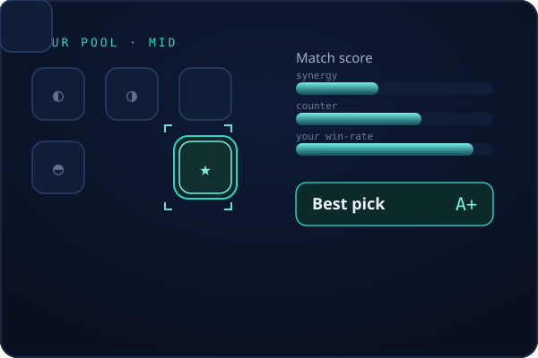

Champion recommendation
It picks your champion — not a generic tier list.
From your prioritised pool, Sylqon scores every option against who's already locked: ally synergy, lane counters and your own win-rate. The local LLM breaks the ties. You get one confident pick, instantly, refined in the background.